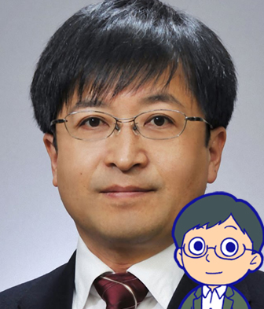

オープンエデュケーションと未来の学び
本講座は終了いたしました。クリエイティブ・コモンズライセンスの下で教材を公開中です。
目的: この講座では、インターネット上で広く教育機会を提供する活動「オープンエデュケーション」の現状について学ぶ。また、オープンエデュケーションが実現する未来の教育と学びの姿を思い描き創造することで、オープンエデュケーションの可能性と課題について深く理解する。
講師・スタッフ紹介
重田 勝介
北海道大学 情報基盤センターメディア 教育研究部門 准教授
大阪大学大学院卒(博士 人間科学)。東京大学助教、UC Berkeley Educational Technology Services 客員研究員を経て現職。研究分野は教育工学・オープンエデュケーション。
武田 俊之

関西学院大学 高等教育推進センター 教育技術主事
専門は教育工学、情報科学、ラーニング・アナリティクス。
森 秀樹
 大阪大学 教育学習支援センター 特任講師
大阪大学 教育学習支援センター 特任講師
大阪大学大学院人間科学研究科博士後期課程中途退学。企業で約13年間に渡り、教育コンテンツ、教育ワークショッププログラムの開発を担当。米国マサチューセッツ工科大学メディアラボ客員研究員、大阪大学大学院人間科学研究科助教、東京大学大学院情報学環特任助教などを経て現職。専門は教育工学、ワークショップ・学習環境デザイン。